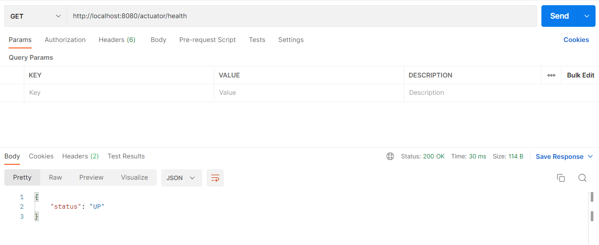

Overview Last updated: 2019-06-01
In the previous articles, we have successfully created the eureka-server, As the next we are going to implement the spring api cloud gateway. this is the gateway that uses for communication between each microservice. in the monolithic architecture, the servers communicate with the ports of each service running on. in the microservice architecture we don't know what is the exact port that each microservice running on. even though we know the ports we don't want to care about it. because the eureka server handles internally all instances we have configured with eureka service. therefore, the api gateway can talk with the eureka server and get all the relevant services details to be routed from the eureka server. therefore, we don't care about the port numbers there.
Full source code on Github
Creating api-gateway-service.
Visit to the spring initializer and create the project by adding the following dependencies.

Implementation of api-gateway-service
Configuration properties
To connect with eureka server and other utility microservices, We have to put our some
properties and configurations
in the application.yml
file.
application.yml
api-gateway > src/main/resources/application.ymlAnnotate the main class
in the api-gateway project, we have to use two annotations for enabling the eureka client
capabilities @EnableEurekaClient and enabling the webflux capabilities @EnableWebFlux.
(Api-gateway uses internally reactive way with webflux to increase the performance and to
the
resilience of the application due to all the requests are going through the Api-gateway for
each service )
Now the api-gateway is ready to use.
Check the health by using the Curl.
curl --location --request GET 'http://localhost:8080/actuator/health'
After all, The api-gateway project folder and file structure like below.
└───main
├───java
│ └───org
│ └───mono
│ └───stacksaga
│ └───example
│ └───apigateway
│ ApiGatewayApplication.java
│
└───resources
application.yml
Example series
-
Microservice example without using StackSAGA (Imperative way)
-
Microservice example by using StackSAGA (Imperative way).